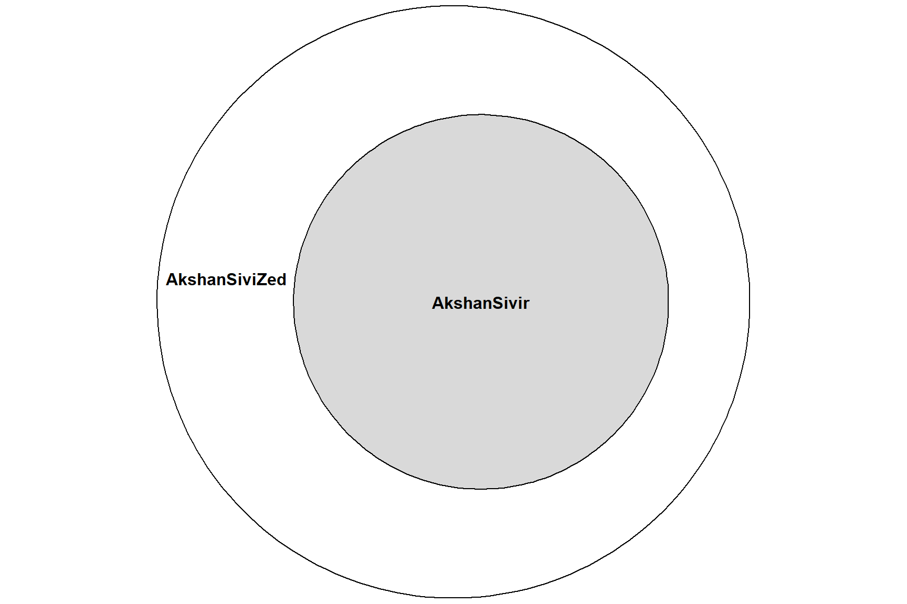

First entry on a series of article that will gather my explorations over different way to define archetypes in Legends of Runeterra
This series of article/analysis are meant to rappresent my journey in how to define archetypes.
Archetypes in Legends of Runeterra are currently defined by me by the combinations of champions and regions. While a lazy method it’s(was?) a first approximation that worked decently aside for some exception while always knowing the disadvantage that the number of possible classes will is probably too high compared to the number of available games (at least at Master). On the other side of the spectrum the most restricting classification would with a categorical (maybe even just dichotomical) variable, something like using the Super Archetypes from viciousSyndicate (vS): Initiative and Resource decks 1. Every other archetype classification is in immediatiate and it’s a vast ocean of possibilities with no ‘correct’ solution.
As everything needs to be done step by step, I’ll start with what was pointed to me a few weeks ago:
Ever since Dragons decks turned into legit meta options (also ‘Overwhelm’ decks with “Renekton / Sejuani / Sivir”) deck with 3 champions (often in a ratio 3-2-1) have become more widely used and they are their acceptance as legfit option increased without being considered some wacky tech. Of course I’m just talking about acceptance, I’m not talking about performances or if they are indeed the better option, again this could be a topic for the future and not regarding the archetypes definitions.
So, returning to the tweet, in the previous patch at the moment I’m writing this (2.14) a clear case of three champions being played togheter are: Akshan/Sivir/Zed (ASZ).
The question is simple: is my current aggregation too lacking? There are archetypes that may indeed looks similar to other just by intuition but it’s not a “proper approach”, but are they? Is Sivir/Zed just a special (SZ) case of ASZ that lacks Akshan?
This article will try to respond to such question.
Note: I’m aware that the aggregation problem is not limited to cases with three champions but even with 2, see Viego with different regions, or what actually matters are even just a couple of cards in the deck like “Feel the Rush” or “ARAM (Howling Abyss)” but as mentioned, one must proceed with baby steps and tackling and example of the ‘three champ’ problem is probably the easiest example.
The sample is made of 845362 Ranked games from 2021-07-14 21:00:00 to 2021-08-25 21:00:00, so covering the patch 2.13 after the start of the Ruination Event so that there wouldn’t be any change i the card pool in the timeframe analyzed.
Because there was the raise of the Demacian deck with Akshan/Sivir, these decks are removed as they could create a few problem in the following steps. The sample is reduced to 815816 games
Let’s now add some information about the presence of ASZ decks and the variant with just Zed (SZ) or just Akshan (AZ).
First of all, the amount of ‘Akshan/Sivir/Zed’ decks in the sample amounts to 26425
| Characteristic | Zed | Akshan | |||
|---|---|---|---|---|---|
| Overall, N = 815,8161 | no Sivir/Zed, N = 774,2851 | Sivir/Zed, N = 41,5311 | no Sivir/Akshan, N = 755,8761 | Sivir/Akshan, N = 59,9401 | |
| #Champion | |||||
| 0 | 3,786 (0.5%) | 3,786 (0.5%) | 0 (0%) | 3,786 (0.5%) | 0 (0%) |
| 1 | 73,389 (9.0%) | 73,389 (9.5%) | 0 (0%) | 73,389 (9.7%) | 0 (0%) |
| 2 | 682,488 (84%) | 667,464 (86%) | 15,024 (36%) | 650,620 (86%) | 31,868 (53%) |
| 3 | 55,196 (6.8%) | 28,694 (3.7%) | 26,502 (64%) | 27,224 (3.6%) | 27,972 (47%) |
| 4 | 756 (<0.1%) | 751 (<0.1%) | 5 (<0.1%) | 701 (<0.1%) | 55 (<0.1%) |
| 5 | 43 (<0.1%) | 43 (<0.1%) | 0 (0%) | 42 (<0.1%) | 1 (<0.1%) |
| 6 | 158 (<0.1%) | 158 (<0.1%) | 0 (0%) | 114 (<0.1%) | 44 (<0.1%) |
|
1
n (%)
|
|||||
| Characteristic | Zed | Akshan | |||
|---|---|---|---|---|---|
| Overall, N = 815,8161 | no Sivir/Zed, N = 774,2851 | Sivir/Zed, N = 41,5311 | no Sivir/Akshan, N = 755,8761 | Sivir/Akshan, N = 59,9401 | |
| #Champion | |||||
| 0 | 3,786 (0.5%) | 3,786 (0.5%) | 0 (0%) | 3,786 (0.5%) | 0 (0%) |
| 1 | 73,389 (9.0%) | 73,389 (9.5%) | 0 (0%) | 73,389 (9.7%) | 0 (0%) |
| 2 | 682,488 (84%) | 667,464 (86%) | 15,024 (36%) | 650,620 (86%) | 31,868 (53%) |
| 3 | 55,196 (6.8%) | 28,694 (3.7%) | 26,502 (64%) | 27,224 (3.6%) | 27,972 (47%) |
| 4 | 756 (<0.1%) | 751 (<0.1%) | 5 (<0.1%) | 701 (<0.1%) | 55 (<0.1%) |
| 5 | 43 (<0.1%) | 43 (<0.1%) | 0 (0%) | 42 (<0.1%) | 1 (<0.1%) |
| 6 | 158 (<0.1%) | 158 (<0.1%) | 0 (0%) | 114 (<0.1%) | 44 (<0.1%) |
|
1
n (%)
|
|||||
Note : The percetages are column-wise
The overall prevalence of ‘3 champions deck’ while it may looks higher than common believes (6.77%) the value is mostly carried by the Akshan/Sivir/Zed which amoutn to almost half the cases of 3 champs decks 47.9%
More specificaly, those 26425 ASZ decks are the main subset of both SZ decks when using 3-champions (99.7% of the cases) and for AZ decks too (94.5% of the cases). In other words, it seems the ASZ are indeed almost always the case of the 3-champion option when going from two to three champions starting from SZ or AS.
| Champions Frequencies | |
|---|---|
| Prevalance of the 'third' champion in Sivir/Zed with 3 Champions | |
| Champions | Percent |
| Akshan | 99.709% |
| Renekton | 0.257% |
| Lee Sin | 0.011% |
| Shen | 0.011% |
| Lulu | 0.008% |
| Azir | 0.004% |
| Champions Frequencies | |
|---|---|
| Prevalance of the 'third' champion in Sivir/Zed with 3 Champions | |
| Champions | Percent |
| Akshan | 99.709% |
| Renekton | 0.257% |
| Lee Sin | 0.011% |
| Shen | 0.011% |
| Lulu | 0.008% |
| Azir | 0.004% |
Lastly, just to give a bit of additional info, the previous tables shows the relative frequencies of the third champion of choice in decks with three champions with Sivir and Zed
This section illustrate the conceptual framework I’ll (would) use to tackle the question for this article.
While the question is about the similarity between ASZ and SZ decks what I’ll try to look at are the following relationships:
The first step would be finding whenever Sivir/Zed (SZ) and Sivir/Akshan (SA) decks are a specific case of Akshan/Sivir/Zed (ASZ) decks. ( green arrow )
If true, and only then, the following and final step would then be accerting the similarity/equality of Sivir/Akshan with Sivir/Zed ( black arrow )
# A tibble: 5 x 2
AkshanSiviZed AkshanSivir
<dbl> <dbl>
1 1 1
2 1 1
3 1 0
4 1 0
5 1 0
Or to make it simpler:
The first step is seeking if there is indeed an intersection between AkshanSivir and SivirZed
If there is indeed an intersection how relevant it is. Is it big enough so that the two archetypes should be aggregated ?
How to approach this problem? There are several options, both that I may can think and that I cannot currently imagine. Since this is the foundation of the tools I want to use in the future for defining archetypes it will use clustering methods. By using clustering a distance is necessary and a distance is indeed the tool I’ll mainly use for the analysis.
<ScaleContinuousPosition>
Range:
Limits: 0 -- 1their definition, example and so on will be a topic for the future.↩︎